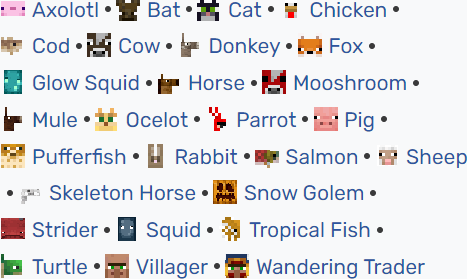
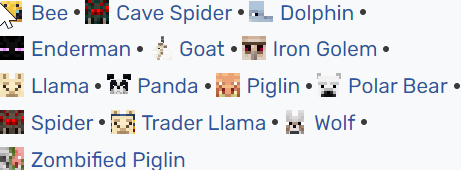
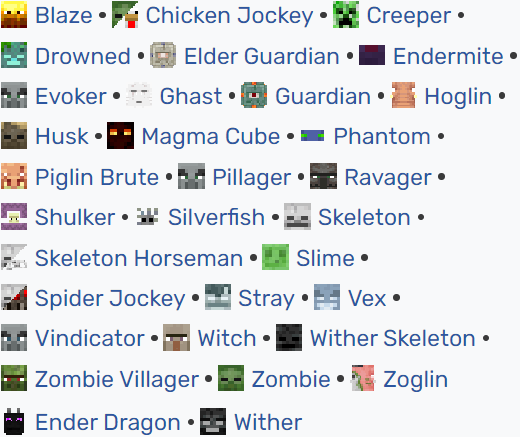

De dieren en monsters die men tegenkomt in het spel worden vaak mobs genoemd. Dit is de afkorting van het Engelse woord mobiles, dat soms in de spelindustrie wordt gebruikt als term voor beweegbare wezens. Sommige mobs zijn vriendelijk, sommige zijn neutraal en andere zijn vijandig. Vriendelijk  Vriendelijke mobs zijn bijvoorbeeld varkens, koeien, schapen, vissen en inktvissen. In latere versies van Minecraft zijn hier ook paarden, konijnen en lamas bij gekomen. De meeste hiervan kunnen door de speler gefokt worden door ze te vangen en voedsel te geven. Deze dieren kunnen de speler dan van vlees, leer, wol e.d. voorzien. Neutraal  Neutrale mobs zijn wolven, ijsberen, endermannen, agressieve panda's en ijzergolems, die de speler alleen aanvallen wanneer de speler eerst deze mobs heeft aangevallen. Dit geldt ook voor spinnen overdag, maar als ze aanvallen, blijven ze dat ook doen. Vijanding  Vijandige mobs zijn bijvoorbeeld zombies, skeletten, creepers, spinnen en heksen. De vijandige mobs vallen uit zichzelf spelers aan, en als deze zich niet verdedigt of vlucht, zal hij daaraan doodgaan. Spinnen vallen echter alleen 's nachts aan, overdag gedragen zij zich als neutrale mobs. In de Nether zijn er andere vijandige mobs (zie aldaar).